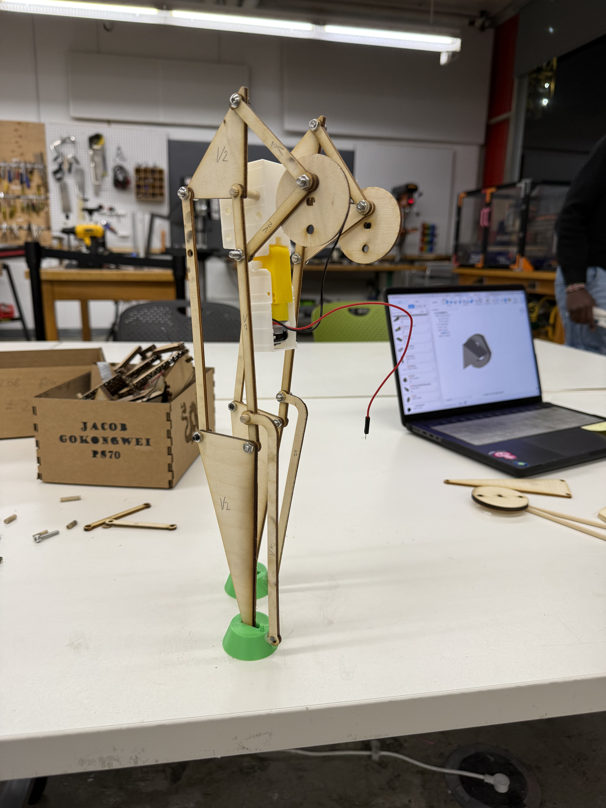
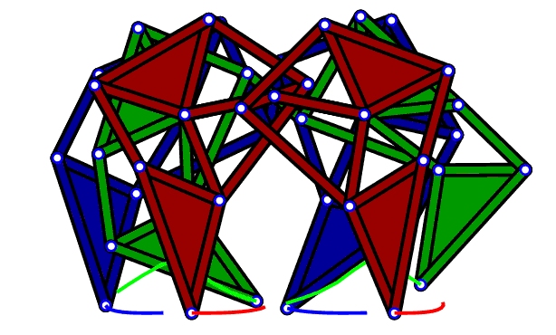

<div class="textcontainer">
<p class="margin"></p>
<h3>Final Project: Ja(nsen)cob Walker</h3>
<p>The goal is to make a walker robot, similar to a starwars ATAT. The moment I started trying to replicate the ATAT, the more I found that I was poorly designed....</p>
<h4>Iteration 1: MVP</h4>
<p>For my MVP I wanted to demonstrate the basic walking mechanism of the robot. I wanted to use the Jansen linkage and pair it with ATAT feet rather than the regular pointed "spider feet" that the Jansen linkage/Strandbeest uses.</p>
<div style="display: flex; gap: 20px; justify-content: center; flex-wrap: wrap;">
<div>
<p style="text-align: center;"><b>My version with feet</b></p>
<p></p>
</div>
<div>
<p style="text-align: center;"><b>Strandbeest</b></p>
<p></p>
</div>
</div>
<video width="400px" controls>
<source src="./videos/v1fail.MOV" type="video/mp4">
</video>
<p>The initial linkages did not work. The nuts kept falling off. Needed to replace them with lock nuts and washers!</p>
</div>
Iteration 2: MVP
Next steps are to build a more stable version that can balance properly, currently working on a wheelbarrow configuration.
Also need to work on connecting a battery to the walker instead of using the power supply.